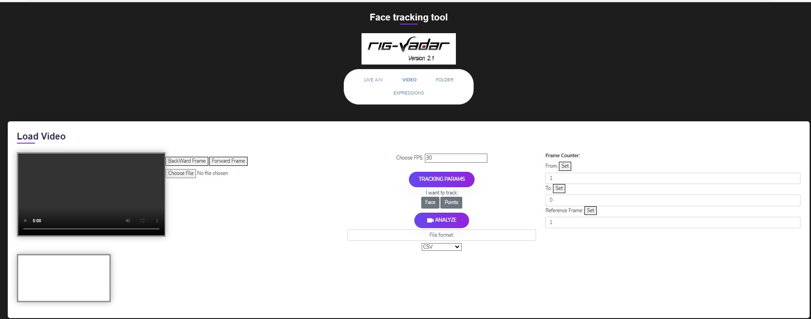
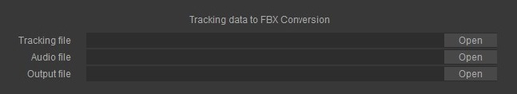

Creating CSV Tracking files
Go to the video section of www.RigVadar.com and load any video. This can be an mp4 or QT or almost any other format.

After tracking is completed, press the 'DOWNLOAD COORDINATES' button.
Save the csv file to desired location. The CSV file is human-readable and can be inspected using any spreadsheet program such as Excel.
The position data for each tracked point appears, along with scale, rotation and mask movement data.
Alternatively, you can choose the 'folder' section of the rigvadar site, which uses a folder of images. This might be useful if you have larger files to deal with.
Select a folder which contains the image set you require. Or you could also select 'convert video file to a set of images'....in this case, it's the Data folder containing the newsreader footage...
Click on a frame you wish to serve as the reference frame then press 'analyze' as before...
The csv file will be produced as before.
Real Time Performance capture
If real time performance capture is important to your studio, the RT component can be downloaded from the RigVadar site at reasonable cost.
You may then navigate to the Live A/V section of the RigVadar site.
You will be prompted to mute your speaker. Otherwise annoying feedback will occur.
Importing Tracking Data into TBX
Open TBX and navigate to the CSV file location.
- You may at this time include the audio file if you have it, otherwise you may use the 'extract' function of TBX to extract both the image set as well as the audio track.
- The output location can be chosed. If no location is chosen ,the generated FBX file will be imported by default into the same folder as the CSV file.
The frame rate of the CSV file along with the range of frame numbers will appear in the input boxes:

Up Vector selection and frame rate:

The up vector will be chosen dependant on the application you will import it into.
Extracting audio and image sequence from a clip
If you wish to extract the audio from the source clip, you can do so here, along with the set of images from the clip:
You can choose to extract just the audio or just the image set, or neither. The frame set and audio will be placed in the same location as the CSV file. The audio file will be automatically placed in the input for audio, and will become part of the generated FBX file.
Exporting your FBX file
The FBX file can now be exported to many 3d application such as Maya, 3ds max, Blender etc.
The FBX file audio track can be read by all except 3ds max, which requires the user to give the location of the audio file, which you can do by navigating to the original folder containing the FBX file.
Using FBX to animate rigs
The FBX file is essentially an animation of major facial landmark features, and can be used to connect facial performance data to any rig in any 3d program.
In the case of 3ds max, we connect the major controls to dummies which move as the relative distance between two markers in the FBX file. For example, the difference between the chin and nose moves the mouth control and reflects mouth open/closed.
Note that since these controls move many adjacent points on the face, the need for many morphs and countless control splines vanishes.
In this case, each master control on the rig can control 9 morph targets, so that each of the 5 controls around the mouth can , potentially, control 45 morph targets with only a few movements.
In the example below , there are no morph targets at all, as it is all bone(muscle) based. However this can easily be converted into a morph based rig.
This rig was built in a matter of a few minutes using the RigVadar rigging software for 3ds max.
It also makes possible the rapid design of any rigging UI, with connections to either objects, morph targets or custom attributes such as wrinkle maps for procedural animation of almost any parameter via one control only.
Similar rigs can be built for Maya using MEL scripts.